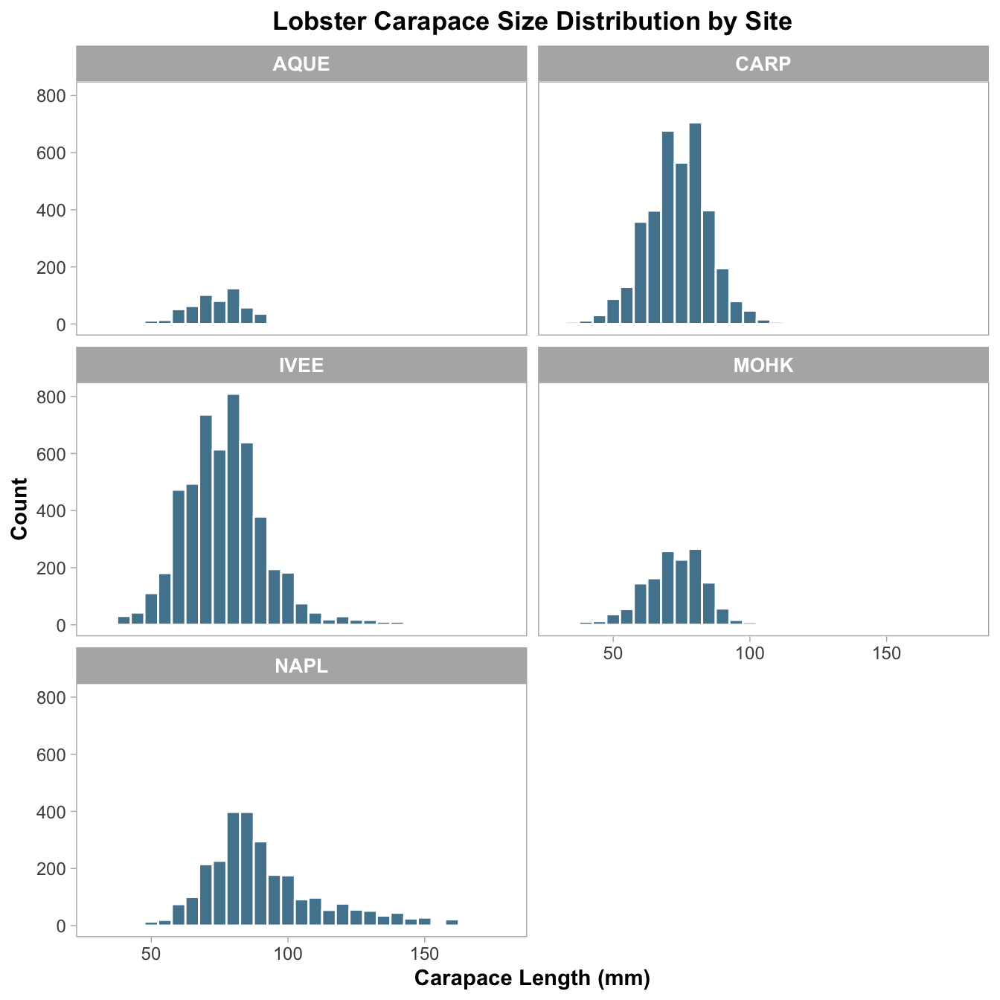
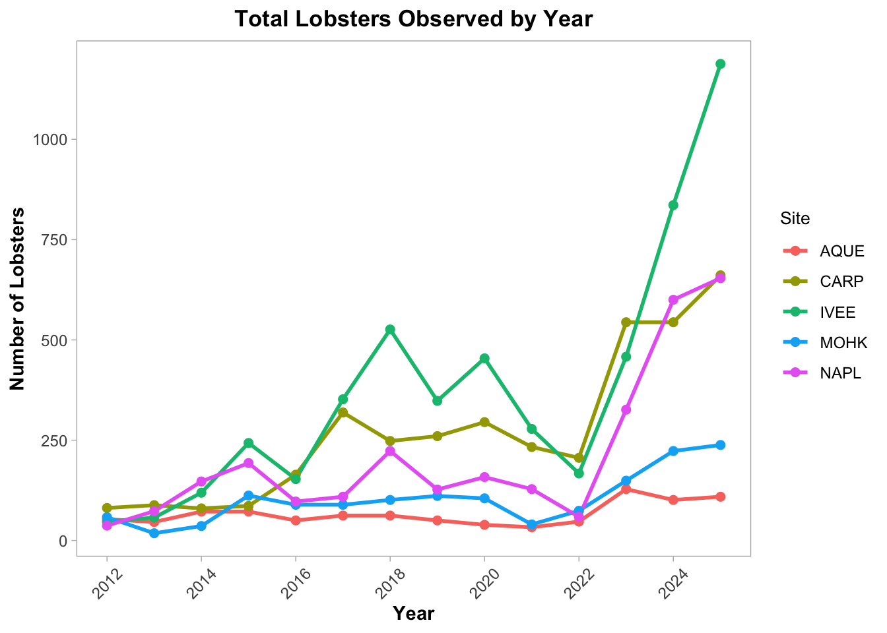
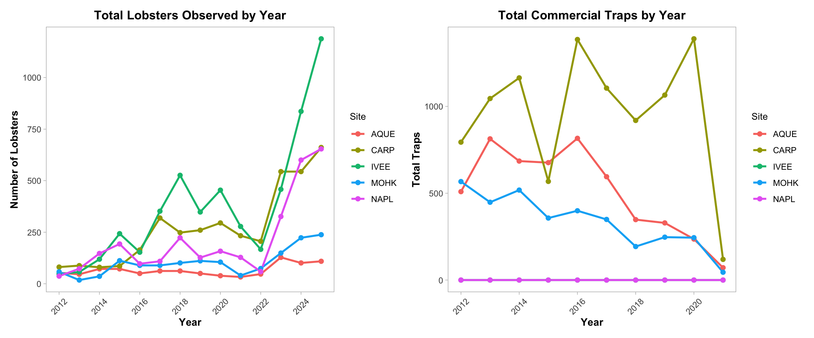

Lobster Report
Data source
The lobster abundance and size data used in this report were obtained from the Santa Barbara Coastal Long-Term Ecological Research (SBC LTER) program, archived on the EDI Data Portal. Data were collected by divers conducting annual and periodic surveys along permanent transects at five reef sites in the Santa Barbara Channel. Lobster counts and carapace lengths (mm) were recorded at each transect and replicate.
-Dataset: Reed, D., and R. Miller. 2023. *SBC LTER: Reef: Abundance, size and fishing effort for California Spiny Lobster (Panulirus interruptus), ongoing since 2012.
-Downloaded: April 17, 2026
- Direct download link: https://portal.edirepository.org/nis/mapbrowse?packageid=knb-lter-sbc.77.8
Abstract
This report examines the relationship between commercial fishing pressure and California spiny lobster (*Panulirus interruptus*) population health along the Santa Barbara Channel coast, using long-term monitoring data collected by SBC LTER researchers from 2012 to 2025. The owner analysis focuses on lobster abundance and size distribution across five reef sites, while the collaborator analysis examines commercial trap buoy counts as a measure of fishing pressure. Together, the analyses explore whether higher commercial trapping activity corresponds to lower lobster abundance and smaller body sizes, providing evidence for the negative impact of commercial fishing on local lobster populations.
Introduction
In addition to fishing pressure, marine protected area (MPA) status provides important context for interpretation. According to the SBC LTER lobster fishing pressure protocol (Harrer and Nelson, 2014), the sites Naples and Isla Vista were designated as marine protected areas (MPAs) in 2012. Within this dataset, the site NAPL corresponds to Naples and is therefore treated as a confirmed MPA site. However, MPA status is not explicitly defined for all site codes, and not all sites can be directly matched to protected areas. As a result, comparisons between protected and non-protected sites are limited must be interpreted cautiously. The central focus of this study is to assess whether a consistent negative relationship exists between fishing pressure and lobster population characteristics, or whether this relationship varies across sites. Specifically, this analysis tests whether sites with higher trap density and more frequent high-pressure classifications show lower lobster abundance or a reduced proportion of large individuals during the 2019–2021 period. By comparing biological patterns with fishing effort across sites and incorporating confirmed MPA status where available—this study aims to identify whether reduced fishing pressure is associated with stronger lobster populations.
Data Analysis
Lobster Abundance and Size (All Years)
Data Exploration and Cleaning
The lobster abundance and size dataset contains 14,333 rows and 10 columns, spanning observations from 2012 through 2025 across five reef sites: Arroyo Quemado (AQUE), Carpinteria (CARP), Isla Vista (IVEE), Mohawk (MOHK), and Naples (NAPL). Variables include the year, month, date, site, transect, replicate, carapace length (`SIZE_MM`), lobster count, and survey area.
During initial exploration, the `SIZE_MM` column was found to use `-99999` as a placeholder for missing carapace measurements. These values were recoded as `NA` prior to analysis to prevent them from distorting any size-based summaries or visualizations. After cleaning, 154 distinct carapace lengths were recorded, ranging from 18 mm to 220 mm.
Data Wrangling
To support targeted analysis, two subsets were created from the cleaned dataset. The first excluded observations from Naples Reef (NAPL) to allow comparison among the four remaining non-MPA and MPA sites independently. The second isolated individuals from Arroyo Quemado (AQUE) with a carapace length of at least 70 mm, capturing the larger size class at that site. In addition, maximum carapace length was computed for each combination of site and sampling month, providing a summary of the largest individuals recorded across the monitoring period. For the size class visualization, lobsters surveyed between 2019 and 2021 were classified as either “small” (carapace ≤ 70 mm) or “large” (carapace > 70 mm), and counts within each size class were summarized by site.
Lobster Trap Buoy Counts (All Years)
Data Exploration and Cleaning
The lobster trap buoy counts dataset contains trap count observations collected across the same five reef sites from 2012 to 2021. Variables include the year, month, date, site, transect, replicate, and the number of commercial trap floats (TRAPS). During initial exploration, the TRAPS column was found to use -99999 as a placeholder for missing values. These were recoded as NA before any analysis to avoid skewing the results.
Data Wrangling
To support interpretation of fishing pressure, trap counts were summarized by site and year to examine temporal changes across locations. In addition, observations from 2019 to 2021 were classified into “high” and “low” fishing pressure categories using a threshold of 8 traps, following the class exercise. These categories were then summarized by site to compare how frequently higher fishing pressure occurred across the study area.
Data Visualization
Lobster Abundance and Size (All Years)
Figure 1: Size Distribution Patterns
Figure 2: Temporal Trends in Lobster Abundance

Figure 3: Size Class Composition During 2019–2021

Lobster Trap Buoy Counts (All Years)
Figure 4: Distribution of Trap Counts by Year

Figure 5: Temporal Trends in Trap Counts

Figure 6: Fishing Pressure Categories During 2019–2021

Discussion
Across both the lobster abundance/size data (Figures 1–3) and the fishing pressure data (Figures 4–6), clear spatial and temporal patterns emerge that suggest fishing pressure plays an important role in shaping lobster populations in the Santa Barbara Channel.
Figure 1 shows that most lobsters across all five sites had carapace lengths between 60 and 100 mm, with right-skewed distributions indicating fewer large individuals. Naples Reef (NAPL), an MPA, had a wider size distribution reaching up to 220 mm, consistent with reduced harvesting allowing lobsters to grow larger and live longer. Figure 2 shows that lobster counts were relatively stable from 2012 to 2022, then increased sharply at IVEE and CARP after 2022, likely reflecting population recovery from reduced fishing pressure. AQUE remained consistently low throughout the monitoring period. Figure 3 shows that large lobsters (> 70 mm) outnumbered small ones (≤ 70 mm) at every site from 2019 to 2021, which is likely related to the legal minimum harvest size protecting smaller individuals. Together, these patterns suggest that MPA protection and fishing regulations both play an important role in shaping lobster populations along the Santa Barbara coast.
Figure 5 shows that commercial trap counts were highest between 2012 and 2016, especially at Carpinteria (CARP), and then declined sharply at most sites after 2016. This decline in trapping effort roughly corresponds to the period when lobster abundance began recovering, as shown in Figure 2. CARP, which had the highest trap counts throughout the monitoring period, also showed a wide range of lobster sizes and counts — but notably, its recovery in abundance came later than at MPA sites like IVEE, suggesting that even moderate trapping pressure can slow population rebound. Figure 6 shows that from 2019 to 2021, low fishing pressure (\< 8 traps) was more common than high pressure at most sites, but CARP still recorded the most high-pressure observations. Taken together, the collaborator analysis supports the idea that commercial trapping negatively affects lobster populations, with sites experiencing higher trap counts showing delayed or more modest recovery compared to protected areas.
Commercial Fishing Impacts on Lobster Populations
The figure below directly compares lobster abundance (left) and commercial trap counts (right) over time at each site. This side-by-side view illustrates the inverse relationship between fishing pressure and lobster population size — as trap counts declined after 2016, lobster counts began to recover, particularly at MPA sites where trapping was already restricted.
